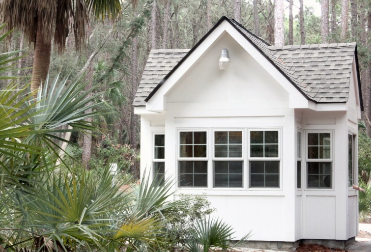

.png)
.PNG)
.PNG)
.PNG)
.PNG)
.PNG)
.JPG)
.JPG)
.PNG)
.PNG)


Because this blog is named Talk of the House, I always try to make the posts about our travels fit with discussions about houses and rooms, but that won’t be the case today. I’m afraid you are going to have to be Joe Tourist here as I wrap up the South Carolina series with our last day adventures..and they didn’t include visiting pretty neighborhoods, but I hope you will enjoy it just the same.
It was an overcast morning that threatened rain as we left Beaufort and traveled over to Hunting Island State Park. I was hoping for a beautiful day like the one pictured in the photo at the top of the post, but it wasn’t quite the same sky, was it? The park entrance had a cute little building where we bought our island pass.

Are any of you fans of Lost? I have to admit that as we made our way down this road my husband and I said that it looked like a scene out of the show, and we were expecting the big black “smoke monster” to come out of the trees!

But thankfully no smoke monster appeared,and we arrived safely at Hunting Island’s lighthouse. This was the second lighthouse built there. The first one, made entirely of brick in 1859 and used to help ships navigate the waters between Savannah and Charleston, was destroyed by the Confederate army to hinder navigation by the Union soldiers.

The lighthouse was rebuilt with smartly designed interchangeable panels so that it could be moved if erosion made is necessary. And it did become necessary. The lighthouse was moved 1/4 mile in 1889.

Some of the outbuildings still stand in the compound, but unfortunately the lightkeepers’ home and 2/3 of the maritime forest were destoyed in a fire that took three days to put out in 1938. (They even had to call in the marines to contain it.) It is rumored that the fire started from an oil lamp being knocked over in a card game in the house.


We took the path from the lighthouse down to the beach even though it was beginning to rain some. I couldn’t be that close to the ocean without actually walking down to it and hearing the waves!


After seeing the beach, we drove back into Beaufort and headed over to Bluffton.

Goodbye, Beaufort. We enjoyed our visit and will be back again. 🙂
Bluffton was about a 45 minute drive from Beaufort. While we had breakfast that morning at the inn, one of the ladies there said that Bluffton had grown tremendously in the last decade. It had been a very small town, but as Hilton Head had grown, it had taken Bluffton in – much like Atlanta has taken in so many of its surrounding small towns.
The addition of the Tanger Outlet centers between Bluffton and Hilton Head had really spurred the growth there. And of course, I had to make my husband stop at the outlets. I went in only two stores (pretty good considering all that I could have gone in,) and I bought only one thing: a black and white gingham shirt from J Crew (priced waaaaay below the normal retail price. 🙂 )

The town of Bluffton has managed to keep a section with the original feel of the place before Hilton Head’s influence. It reminds me of the feel of Grayton Beach outside of Destin, Florida. This section of Bluffton is called Old Town Bluffton and has some cute and unusual stores. So we left the outlets and drove into town.
It was getting late, and the recommended dining spot was The Cottage.
As you can see from the sign, they are a cafe, bakery, and tea room all in one. (I couldn’t believe how many people were purchasing tea pots while we were there!) And oh my goodness at all the desserts to choose from! (This is not all of them..there was a rotating cake carousel on the other side that I did not even photograph.)

Here is the view from our table where we dined. It had been packed when we started our lunch at 2:00, but because we leisurely enjoyed our meal, the restaurant was pretty much cleared out by the time we finished.

My husband had the regional favorite, shrimp and grits. It was loaded with pieces of bacon. After mixing it all together he really liked the dish. (Just don’t try to eat it from the top layer down. It needs to be mixed.)

Being allergic to shellfish really stinks – especially when you are in a coastal area with such fine seafood dishes. 🙁 But I did have a very delicious roasted chicken pot pie (not nearly as good as a shrimp dish, but yummy nonetheless with its creme fraiche topping.)

We were quite full from our meals, so we grabbed a dessert to go, said goodbye to the nice folks at The Cottage…
and hit the road home. It was a short visit, but I think we really saw a lot of the area.
And that wraps up all that I have to share with you. It will be back to normal “house” posts this week. Thank you so much for traveling along with us in the low country of beautiful South Carolina. I really hope you also have the opportunity to share in the good things of that area one day soon.
until next time…


.PNG)
{kind=link}
I’m itching to hit the road. Hopefully, soon. Loved being “Joe Tourist.” And that food looks divine.
———————————————————————-
Dayle – Thank you! I hope you get to go on a trip soon, too. The food was quite delicious (and more than I could eat!)
Kelly
Kelly, I have thoroughly enjoyed your South Carolina travels! I especially liked seeing the lighthouse–I’ve always thought it would be neat to live in a lighthouse keeper’s house!
Can’t wait to see what’s next!
———————————————————————–
Ann – When I was young, I read about a lighthouse keeper’s cottage on an island that you could rent to stay in. I cannot remember where that was, but like you, I thought it would be fun (and I thought romantic too!)
Kelly
I have enjoyed going on this trip through your eyes; wonderful places I wish I could visit. By the way, are you a travel agent on the side? Maybe your next career. :0) Thank you for doing this for all of us. I loved all the cottage at Palmetto Bluff.
———————————————————————
Minnie – Glad you liked the trip. I think we were able to see a lot in a short period of time. No, not a travel agent, but it would certainly be a fun job.
Kelly
First of all, so sorry to hear about your shell-fish allergy. That would be really really tough for me considering how much I love/eat shellfish.
Now on the trip and your photos. I love that restaurant where you ate, so fun and charming and the food looked amazing, even your chicken pot pie, although I would have had to reach for that shrimp and grits myself.
I love seeing other coastal towns and beaches and how they differ from ours. I love the natural aspect of this one, so beautiful and un-touched.
———————————————————————–
Christina – It IS hard. I didn’t become allergic to shellfish until I was 50. I think being a glutton with broiled shrimp in butter while we were at Apalachicola one summer is what triggered it (plus being a glutton with lobster at practically every meal in Maine). So I KNOW how delicious that shrimp is. NOT fun. So glad you enjoyed the South Carolina posts! The area is much like Savannah, but quite different from the coasts I’ve seen in California, Maine, and some parts of Florida. But I would happily live on any of them!:) Have a happy Sunday!
Kelly
I loved the beautiful pictures of this part of your trip! Please continue to post about all of your adventures- house related or not!!
———————————————————————
Marci – Aw thank you! Usually when we make trips we include a “house looking” adventure along the way, but not always. Thank you for the reassurance that someone might like other aspects of our travels, too. I appreciate you for reading and leaving your sweet comment here.:) Have a super Sunday!
Kelly
The Cottage café is adorable! Food looks great but I’ve always wonderful what “grits” were?
————————————————————————–
Sarah – Too funny! Grits are finely ground corn, but they taste nothing like corn. I make mine with cream so that they have a pudding type consistency. Add lots of butter if you have them for breakfast, and add lots of gravy if you have them for dinner. I love them, but my daughter hates them. You should try them sometime (but NOT the instant ones.)
Kelly
What an enjoyable relaxing read on a cold winter Sunday evening. It is always interesting to read menus from quaint eating establishments like The Cottage. I like looking closely at the small details — chalk boards, bakery offerings, and the different tea pots on display. Do you have any travel plans during Spring Break?I’m going to my first destination wedding in the spring and planning a graduation party for my only granddaughter! I so enjoyed reading and seeing your posts on these two types of celebrations! Looking forward to seeing what you create on your next blog! Have a blessed week, Kelly!
———————————————————————-
Louvina – There were plenty of details to notice in that restaurant! (Of course I was people watching too while we were in there.) A destination wedding will be fun. Glad you enjoyed the posts on the parties too. I am not sure of our Spring Break plans yet. I had thought about a trip to the beach, but I haven’t finalized any plans for it. Guess I better get on the stick since it will be here before we know it!
Kelly
Oh Hunting Island…one of the worst sunburns I ever had I got there!!:) We were newlyweds and went there on a day trip from Savannah. My brother in law informed me that you can find lots of neat shells there so we spent the day and I got shells and sunburn. It was a beautiful natural beach back in those days. Thanks for sharing Bluffton too!!
———————————————————————-
Arlene – Ouch…a sunburn. NOT fun. I did not see any shells there, but then we did not walk down the stretch of beach since it began to rain. Glad you liked the posts on Bluffton. I hope to visit there again.
Kelly
What great pictures! Thanks for providing some inspiration for travel spots!
————————————————————————
Glad you liked the photos. It is so beautiful there that it makes taking pictures of it easy! You should add the area to your travel list. 🙂
Kelly
Kelly,
I really appreciate you sharing your trip with us! We have huge piles of snow everywhere here right now! The pictures of the trip and especially the ocean were all a much needed breath of fresh air! The Cottage you ate at looks awesome in all of it green accents and yummy looking foods! I also love the new header for your blog! It is so springy and I love sweet tea with mint sprigs! Yummy!
———————————————————————-
Dawn – I am looking out at sunny skies and close to 70 degree weather. Sorry (and son is loading up a canoe to take out on the lake!) Your spring will be here soon I know. Thank you for noticing the spring blog header. I have to enjoy that porch a little while before the April pollen monster takes over for about 2 weeks (worst time of the year for the porches.)
Kelly